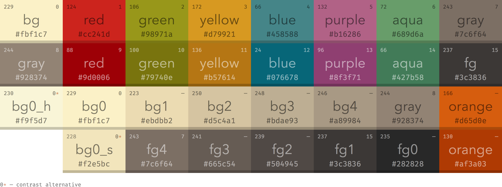

Concept de site
Ce site a été créé dans le cadre d'un projet final en informatique 1B. L'idée de ce site a germé au début de l'année scolaire, c'est à ce moment-là que j'ai choisi le sujet, car je voulais depuis longtemps récapituler mes projets et en faire une présentation. À ce moment-là, les premières ébauches de la page des projets ont été réalisées. À cette époque, je n'avais pas encore défini le design du site, donc j'expérimentais avec différents styles. Cette page présente l'histoire du site avec ses étapes clés, ainsi qu'une démonstration des éléments créés lors de la conception du site et qui n'ont pas été utilisés, et des plans pour leur mise en œuvre éventuelle dans le futur.
Dans la fenêtre à gauche est présentée la première version de disposition des projets sous forme de tuiles.
Cependant, par la suite, cette disposition a été abandonnée, car elle ne répondait pas aux conditions de scalabilité.
Voici le premier prototype d'une page défilante vers la droite. Avant son utilisation sur le site, il a été considérablement amélioré.
Voici la version finale de la page défilante vers la droite. L'idée était de créer une page qui défile vers la droite lorsque vous faites défiler vers le bas. J'ai réussi à le faire.
Choix de la palette de couleurs
J'ai longtemps réfléchi à la palette de couleurs du site.
Après un certain temps de recherche, j'ai trouvé une option qui me convient : GRUVBOX.
Voici la page officielle sur GitHub.


Cependant, j'ai apporté les ajouts suivants : J'ai divisé toute la palette en 4 couches, ainsi que la couleur de la police, en deux thèmes : sombre et clair.
- Thème sombre:
Mise en évidence spéciale
Haut
Normal
Bas
Police
- Thème clair:
Mise en évidence spéciale
Haut
Normal
Bas
Police
J'utilise position: sticky; pour créer l'illusion de 'glissement' d'un élément sous un autre.
Parfois, il est nécessaire de positionner l'utilisateur sur un site Web d'une manière spécifique.
Pour ce faire, j'ai utilisé:
scroll-snap-type: y mandatory; scroll-behavior: smooth; et scroll-snap-align: start; scroll-snap-stop: always;
Ce code m'a permis de créer un défilement du site par étapes, par exemple pour mettre en forme l'en-tête du site.
Step 1
Step 2
Step 3
Idées non réalisées
Sur cette partie de la page, j'ai rassemblé plusieurs éléments auxquels j'ai pensé pendant le développement, mais je n'ai pas trouvé d'endroit où je pourrais les appliquer.
Ce ovale tournant, je l'ai trouvé et amélioré en début du projet. Je n'avais pas de concept précis pour le site, et depuis, je n'ai jamais eu l'occasion de l'utiliser.
Quant à cet effet, je pensais l'appliquer aux cartes avec des photos sur les pages des projets, mais j'ai conclu que cela serait superflu
Special Thanks
à Alice pour les icônes des projets et l'aide à la conception du site
à Pasha pour la vérification
à Grand-père Sasha pour tout